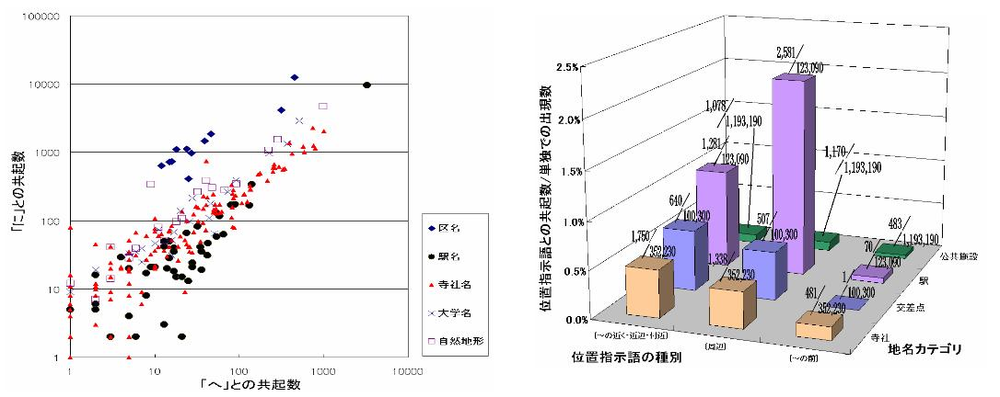

人間が理解している都市の姿は，実世界の物理的な形状とは一般に異なる．認知的な空間の理解を構成する主な要素としては，ランドマーク・ノード・パス・エッジ・ディストリクトなどが挙られる．認知空間の情報は都市ナビゲーションや地域情報検索システムの基盤として利用できるため，アンケートや聞き取り調査による研究などが行なわれてきた．本研究ではウェブに蓄積された膨大な量の地域情報コンテンツに着目し，情報の自動抽出を行なった．
一般に，地域情報は「地図」と「文書」の二つの形式で表現される．ウェブ上には多数の文書形式の地域情報が存在しているが，自然言語の完全な解析は困難であるため，文の構成部分を利用した．例として，「〜の近く」といった近傍表現で頻繁に用いられる地名はランドマークとして重要であると考えられる．イメージマップの重要な要素であるランドマークと位置説明文の形式の関係を明らかにするため，ランドマークを4つのカテゴリに分け，それぞれがどのような位置説明文で使われるかを比較した．実験の結果は図１に示されている．駅カテゴリに属す地名は「周辺」と使われることは多いが，「〜の前」と使われることは相対的に少ないことなどが明らかになった．さらに，地名に付随する格助詞を用いて格助詞による特徴付けを試みたところ，１）駅カテゴリで「カラ格」が多い．２）区カテゴリで「へ格」が「二格」に比べて少ない．３） 寺社カテゴリにおいて「デ格」が多い，など直感と合致する結果が得られた．

図１．位置説明文からのランドマークの属性抽出
これらの結果を用いることで，地理エレメントが持つ認知的属性を推測し，カテゴリ化を行なうことが可能になる．例として，「デ格」が頻出する駅名は行為の場所としての重要性が高く，「カラ格」が頻出する駅名は運動の起点としての重要性が高いと考えられるため，利用用途を反映させたカテゴリに分類できる．抽出された情報を利用して，地理エレメントを認知的属性によってカテゴライズし，表示させるユーザインタフェースを開発した（図２）．ユーザは任意のカテゴリの地理エレメントだけを選択的に表示させることができる．たとえば地元住民と観光客では求める地理エレメントのタイプが異なる．選択的な表示はそれぞれのユーザグループにとって，利便性を向上させる．

図２．ランドマークの特性付けに基づく地図インタフェース
さらに，地域情報コンテンツにおける地名間の共起関係に着目し，関連しあう地名集合をグループ化して“地域”としてのまとまりを表示させるシステムの開発も行なった．地名間の共起関係をグラフの枝として捉えた場合，共通の属性を持つ領域である“地域”は連結度の高い部分グラフとして表現される．一方，次数の大きい頂点はランドマークとしての特徴を多く満たしている．そのため，地名の認知的重要性を頂点の次数に基づいて判定するシステムを開発した．
文献：
Taro Tezuka, Ryong Lee, Hiroki Takakura and Yahiko Kambayashi. Acquisition of Landmark Knowledge from Spatial Description. Proceedings of 2002 IRC International Conference on Internet Information Retrieval, pp.214-221, 2002.
Taro Tezuka, Ryong Lee, Hiroki Takakura and Yahiko Kambayashi. Cognitive Characterization of Geographic Objects Based on Spatial Descriptions in Web Resources. Workshop on Spatial Data and Geographic Information Systems(SpaDaGIS), 2003.
連絡先：
京都大学 社会情報学専攻 手塚太郎 tezuka at dl.kuis.kyoto-u.ac.jp
横田裕介 yyokota at i.kyoto-u.ac.jp